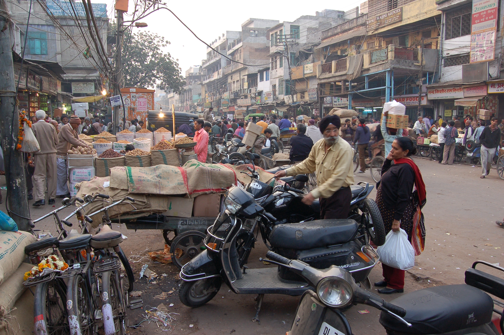
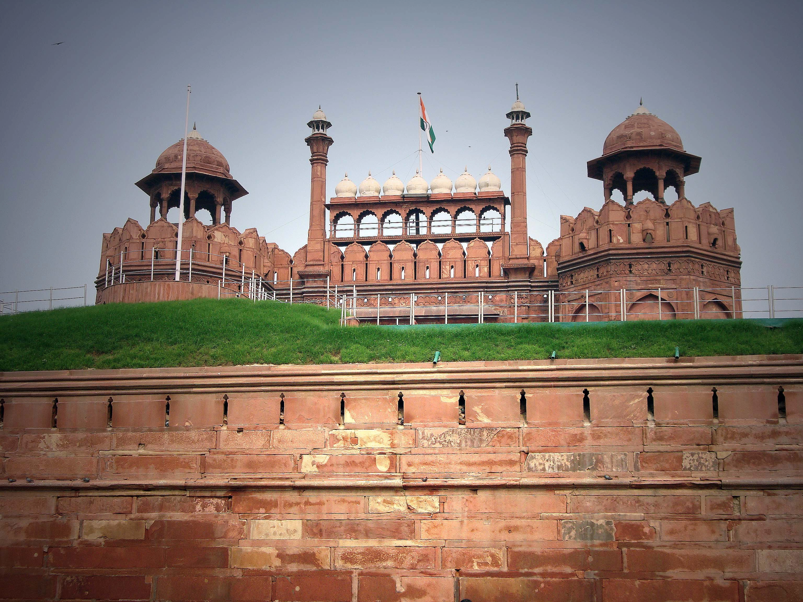
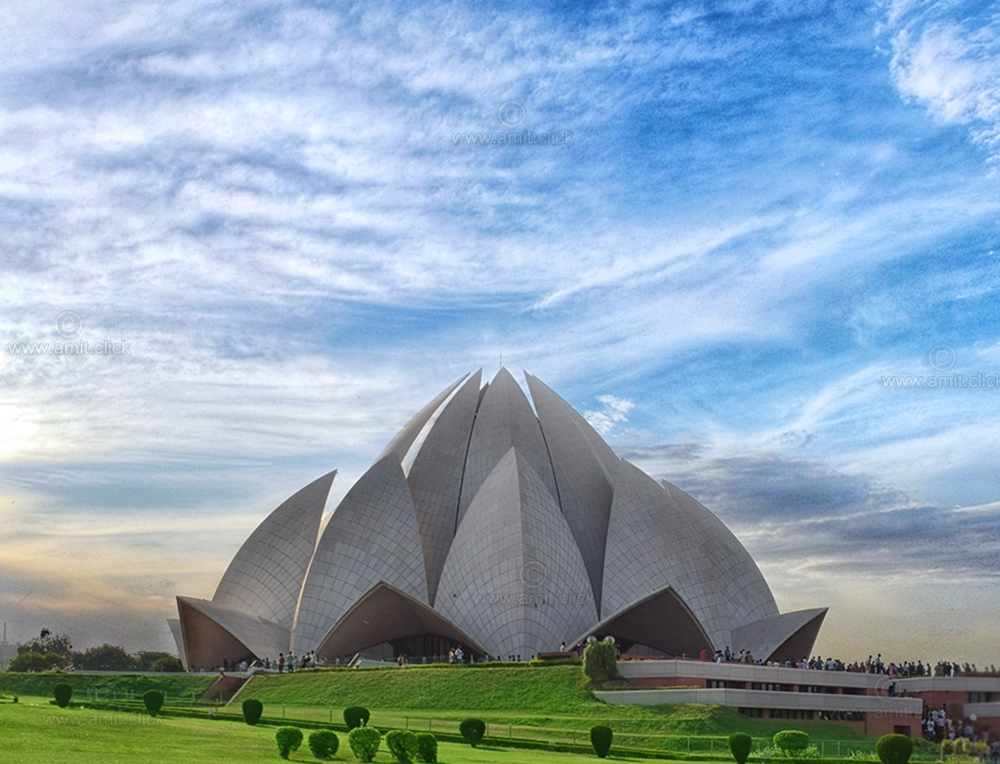

Découverte de Delhi : Un Voyage à Travers le Temps
Histoire de Delhi
Delhi, l'une des plus anciennes villes du monde, est un mélange fascinant d'histoire et de modernité. Avec une histoire qui remonte à plus de 2 500 ans, Delhi a été le centre de nombreuses dynasties et empires. Les premières mentions de Delhi apparaissent dans les textes épiques hindous du Mahabharata, où la ville est appelée Indraprastha.
Au fil des siècles, Delhi a été le théâtre de nombreuses invasions et reconstructions, devenant un carrefour culturel sous les dynasties des Mauryas, des Rajputs, des Sultans de Delhi et des Moghols. En 1911, les Britanniques ont décidé de transférer la capitale de Calcutta à Delhi, et la nouvelle ville, New Delhi, a été conçue par les architectes britanniques Edwin Lutyens et Herbert Baker. New Delhi a été officiellement inaugurée en 1931 et reste la capitale de l'Inde indépendante depuis 1947.
Économie de Delhi
Delhi est le centre économique et commercial de l'Inde du Nord. La ville possède un PIB élevé, grâce à une économie diversifiée qui comprend les secteurs des services, du commerce, de l'industrie manufacturière et des technologies de l'information. New Delhi abrite de nombreuses entreprises multinationales, des sièges sociaux de grandes entreprises indiennes, ainsi que des institutions financières et gouvernementales.
Le secteur des services est prédominant, avec des activités dans les domaines de l'informatique, des télécommunications, du tourisme et de la finance. La ville est également un centre majeur pour l'industrie du textile, des produits chimiques, des appareils électroniques et des machines.
Architecture de Delhi
Delhi est un véritable musée vivant d'architecture. La ville présente une variété impressionnante de styles architecturaux, reflétant les diverses influences culturelles qui ont façonné son histoire.
L'architecture de Delhi est un fascinant mélange de styles anciens et modernes, reflétant sa riche histoire multiculturelle. Parmi les monuments emblématiques de la ville, le Qutub Minar, construit au 12ème siècle, est un chef-d'œuvre de l'architecture indo-islamique avec ses sculptures et inscriptions coraniques. Le Fort Rouge, édifié par Shah Jahan en 1638, et le tombeau de Humayun, précurseur du Taj Mahal, sont des exemples impressionnants de l'architecture moghole.
L'ère coloniale britannique a laissé une empreinte notable avec la création de New Delhi, conçue par Edwin Lutyens et Herbert Baker. La Porte de l'Inde et le Rashtrapati Bhavan, résidence du Président, illustrent cette période avec leurs vastes avenues et leurs bâtiments imposants.
L'architecture moderne de Delhi est également remarquable, avec des structures comme le Temple du Lotus, construit en 1986, qui se distingue par sa conception en forme de fleur de lotus en marbre. En outre, la ville est parsemée de divers temples, mosquées, églises et gurdwaras, chacun apportant sa propre contribution au paysage architectural de la ville. Cette diversité témoigne de l'histoire riche et complexe de Delhi, où chaque bâtiment raconte une histoire unique, faisant de la ville un musée vivant d'architecture.
Delhi et le Tourisme

Delhi est une destination touristique incontournable en Inde, offrant une combinaison unique de monuments historiques, de marchés animés, de musées et de temples. Les touristes sont attirés par la richesse culturelle de la ville, sa cuisine délicieuse et ses nombreux événements culturels.
Les visites guidées des sites historiques, les promenades dans les marchés traditionnels comme Chandni Chowk, et les dégustations de la cuisine de rue sont des activités populaires. Les festivals comme Diwali, Holi et le festival international de l'art et de la culture ajoutent à l'attrait touristique de la ville.
Vous souhaitez plus d'informations
N'hesitez à nous contacter pour plus de renseignements sur nos services, nous sommes à votre ecoute pour faire de ce voyage un moment inoubliable
Delhi en Quelques Chiffres
- Population : Environ 19 millions d'habitants
- Superficie : 1 484 km²
- Altitude : 216 mètres au-dessus du niveau de la mer
- Fondation de New Delhi : 1911
- Climat : Subtropical humide avec des étés chauds et des hivers frais
- Langue officielle : Hindi et Anglais
Les 10 Incontournables de Delhi
- 1. Le Qutub Minar
Un minaret de 73 mètres de haut, datant du 12ème siècle, entouré de ruines de l'ancienne ville de Qutb. - 2. Le Fort Rouge (Lal Qila)
Une imposante forteresse en grès rouge construite par Shah Jahan en 1638, symbole de la puissance moghole. - 3. Humayun's Tomb
Un mausolée du 16ème siècle, précurseur du Taj Mahal, entouré de magnifiques jardins moghols. - 4. La Porte de l'Inde (India Gate)
Un arc de triomphe érigé en mémoire des soldats indiens morts pendant la Première Guerre mondiale. - 5. Le Temple du Lotus (Lotus Temple)
Un temple baha'i moderne en forme de lotus, connu pour sa sérénité et son architecture unique. - 6. Le Rashtrapati Bhavan
La résidence officielle du Président de l'Inde, un édifice impressionnant de l'époque coloniale britannique. - 7. Le Jama Masjid
La plus grande mosquée d'Inde, construite par Shah Jahan, avec une capacité de 25 000 fidèles. - 8. Le Tombeau de Safdarjung
Un magnifique mausolée du 18ème siècle, entouré de jardins luxuriants. - 9. Le Jardin des Cinq Sens (Garden of Five Senses)
Un parc paysager offrant une expérience sensorielle avec ses plantes, ses sculptures et ses installations artistiques. - 10. Chandni Chowk
L'un des marchés les plus anciens et les plus animés de Delhi, fondé au 17ème siècle par Shah Jahan.